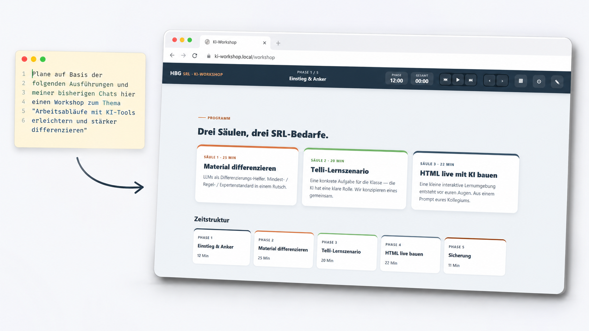
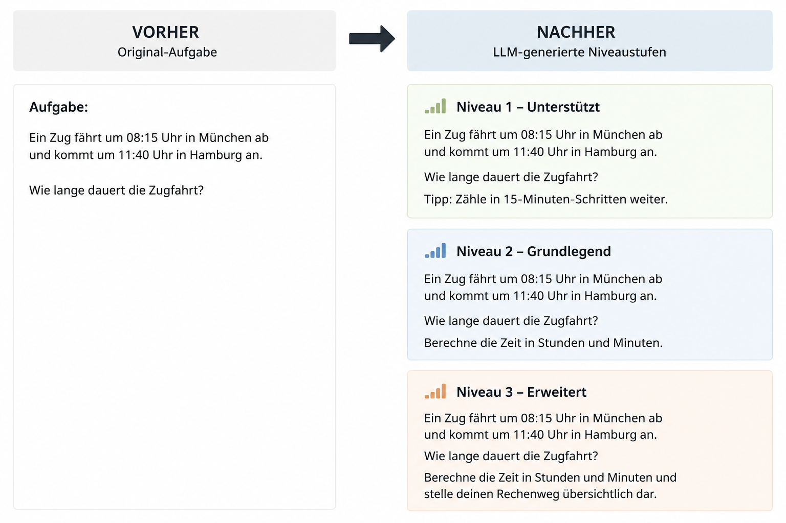
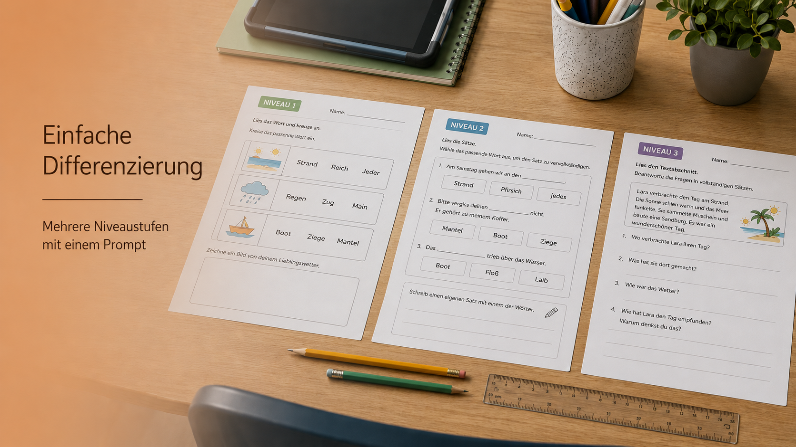
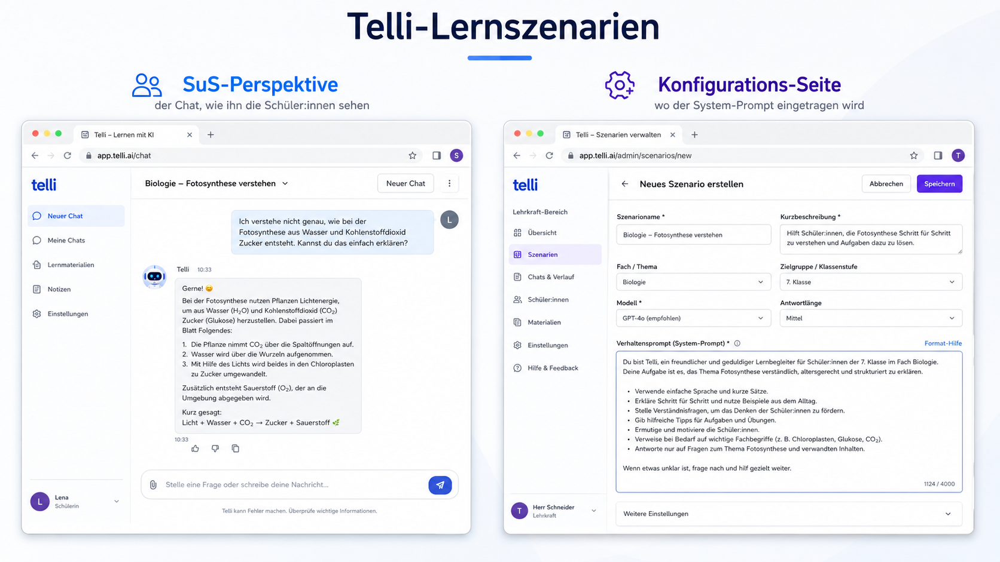

KI-Werkzeuge für selbstreguliertes Lernen
SRL braucht differenziertes Material, Wahlangebote, Hilfekarten, Diagnoseimpulse — und das frisst Zeit. Heute schauen wir, wie KI dir dabei zur Seite steht. Ohne dass die pädagogische Verantwortung wandert.
Sie ist gleichzeitig euer Beispiel für Säule 3.
Header-Timer, Notizfunktion, QR-Generator, druckbare Mitschrift — all das ist mit einem einzigen Prompt entstanden, in einer Iterationsschleife. In Phase 4 schauen wir uns an, wie das geht.

SRL braucht Material, Wahlangebote, Hilfekarten — und das frisst Zeit, die wir nicht haben.
Frage an euch — am Whiteboard, nicht digital:
Wo verlierst du im Schulalltag die meiste Zeit?
Stifte greifen, ein Stichwort drauf — wir clustern gleich gemeinsam. Wir kommen darauf in jeder Säule zurück.
- KI ersetzt nicht die didaktische Entscheidung — sie beschleunigt den ersten Entwurf.
- KI ist stark bei wiederkehrenden Strukturen (Mindest-/Regel-/Expertenstandard).
- Drei Werkzeuge, drei typische SRL-Bedarfe — nicht mehr, nicht weniger.
Drei Säulen, drei SRL-Bedarfe.
Zeitstruktur
Eine Aufgabe — drei Niveaustufen.
Das Mindest-/Regel-/Expert-Raster ist euer roter Faden. KI macht das Differenzieren in Sekunden, ihr macht die didaktische Feinarbeit.
Erstelle zu folgender Aufgabe drei Varianten:
— Mindeststandard: klare Schrittfolge, Hilfen integriert, Beispielanfang
— Regelstandard: normaler Anspruch, ohne Vorgaben
— Expertenstandard: offener, mit Transferaspekt
Ergänze für jede Stufe eine Hilfekarte und einen knappen Erwartungshorizont.
Aufgabe: [hier einfügen]
Klasse / Fach: [hier einfügen]
⚙ oben rechts → URL für „Prompt-Karte PDF" eintragen.

Jetzt arbeiten wir gemeinsam.
Eine Aufgabe von euch, drei Niveaustufen, eine Hilfekarte, ein Erwartungshorizont. Ich tippe, ihr ruft rein.
Was wir gleich tun:
- Eine echte Aufgabe sammeln (3 Min)
- Differenzierungs-Prompt absetzen (4 Min)
- Iterieren, bis es passt (5 Min)
- Hilfekarten und Erwartungshorizont generieren (3 Min)
- Reflektieren: Was habt ihr beobachtet? (5 Min)
Worauf wir achten:
- Sprache prüfen — passt sie zur Lerngruppe?
- Inhaltliche Korrektheit — fachlich sauber?
- Differenzierung — sind die Stufen wirklich unterschiedlich?
- Hilfekarten — geben sie Hilfe oder die Lösung?

Die KI als Teil der Aufgabe.
Ein Lernszenario ist mehr als ein Chatbot. Es ist eine konkrete Aufgabe für die Klasse, in der die KI eine klare Rolle übernimmt — Schreib-Feedback-Partner, Sparringspartner, Lese-Detektiv. Die SuS lernen durch die Interaktion mit ihr, nicht von ihr.
Lernszenario: [Name, z.B. „Schreib-Feedback-Partner"]
Deine Rolle: [Wer bist du in der Aufgabe?]
Aufgabe der Schüler:innen: [Was tun sie konkret?]
Was du tust: Rückfragen stellen, Hinweise geben, konkrete Beispiele aus der Schülerarbeit aufgreifen.
Was du nicht tust: die Aufgabe für sie lösen, das Thema verlassen, persönliche Daten erfragen.

Dein Lernszenario — in drei Sätzen.
Murmelphase: Überlege dir mit deiner Tischnachbar:in eine konkrete Aufgabe, in der ein AIS.chat-Lernszenario sinnvoll wäre. Skizziere kurz — auch in den Notizen rechts.
Briefing-Vorlage
↑ Auto-gespeichert in deinen Notizen.
Beispiel-Lernszenarien:
- Schreib-Feedback-Partner (Deutsch 9) — SuS schicken Text, KI gibt Feedback nach drei Kriterien
- Argumentations-Sparring (Politik 10) — KI vertritt Gegenposition, SuS verteidigen
- Sokratischer Dialog (Prakt. Philosophie 8) — KI stellt Rückfragen zur These
- Vokabel-Quiz mit Hinweisen (Englisch 6) — KI fragt ab, gibt Eselsbrücken
- Versuchsplaner-Check (Physik 8) — SuS erklären Aufbau, KI prüft Vollständigkeit
Kein Codieren. Kein Hosting. Nur Prompt → Tool.
Kleine interaktive Lernseiten, die im Browser laufen. Per QR-Code in den Unterricht. Eine bis vier Iterationen — fertig.
Elektrozimmer
Modell einer Elektroinstallation im Haus — interaktive Komponenten und Schaltungen.
LA2 Zusammenfassung
Zusammenfassen von Literaturauszügen — strukturierte Schreibumgebung mit Lernschritten.
Reisespiele 3D
Reisespiele aus dem 3D-Drucker — Projektbegleitung von der Idee bis zur fertigen Datei.
Eure Idee — jetzt.
Welches kleine interaktive Tool würdest du dir für deinen Unterricht wünschen? Konkret: ein Fach, eine Klasse, ein Lernziel.
So läuft's gleich ab:
- Eine Idee aus dem Plenum auswählen (1 Min)
- Erster Prompt — ausführlich (2 Min)
- Erste Version sichten (3 Min)
- Iteration 1: bunter / spielerischer / mit Sound (3 Min)
- Iteration 2: spezifische Verbesserung (3 Min)
- QR-Code generieren — ihr nehmt's mit (3 Min)
Live-QR-Generator
Sobald die fertige URL feststeht — hier einfügen, QR erscheint sofort.
Was nimmst du mit?
5 Minuten Einzelarbeit. Anschließend kurzer Austausch zu zweit. Du kannst alles am Ende als PDF mitnehmen.
Drei Produkte aus dem Workshop — zum Mitnehmen.
Alles, was wir heute gemeinsam live erstellt haben, scannbar an einem Ort.
Differenzierte Aufgabe
AIS.chat-Lernszenario
HTML-Tool
⚙ oben rechts → URLs einmalig setzen, alle QRs rendern automatisch.
Danke.
Drei Säulen, ein Werkstattgefühl, hoffentlich ein erster Anstoß. KI ist Werkzeug — die pädagogische Wirkung entsteht durch euch.
Tipp: Druckdialog → „Als PDF speichern". Funktioniert offline.